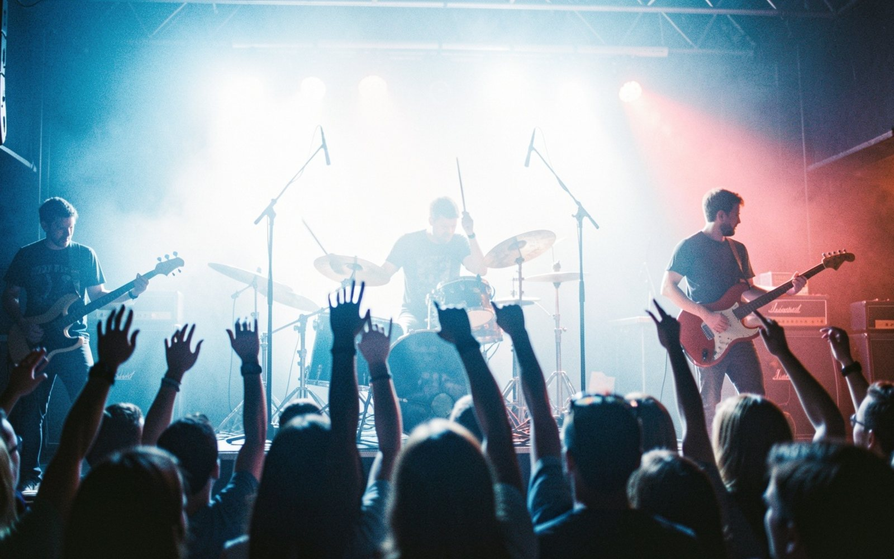
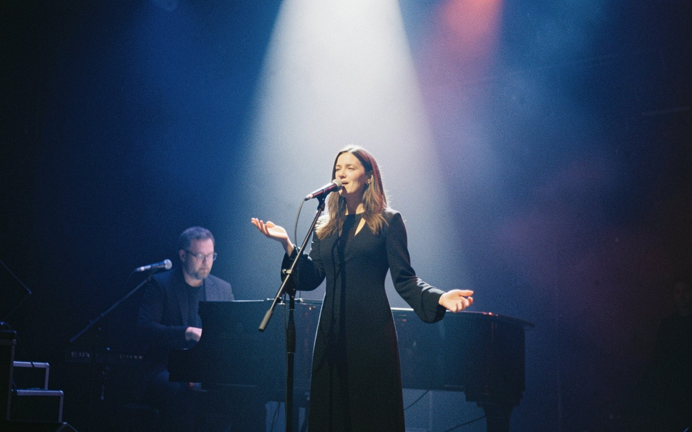
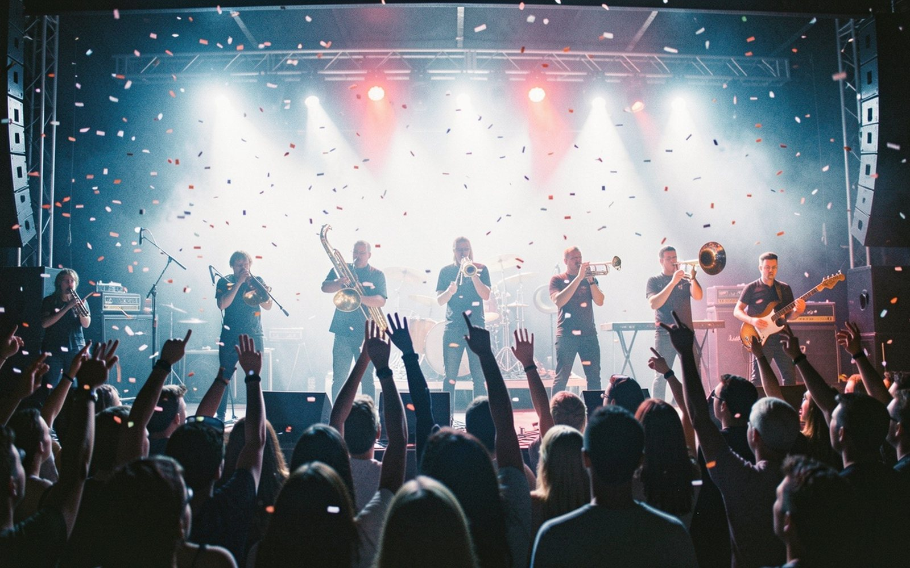

The show
One night,
three orbits
What happens between the first note and the last bow.
The show
One night,
three orbits
The evening runs in three parts with no interval. Each one has its own light, its own pace and its own reason to be there.

01
Launch
The house lights drop and the room lifts off. Forty minutes of the songs everybody came for, played at full height with the whole company on stage.

02
Drift
The quiet stretch. Stripped arrangements, a single spotlight and the stories behind the songs, told from the lip of the stage.

03
Return
Everything comes back at once: the horns, the lights, the choir of the crowd. Nobody sits down for the last half hour.
Press
What they said
Two hours that feel like twenty minutes. I have not seen a room stand up that fast in years.
The Evening Ledger
A concert that knows exactly when to go quiet. The second orbit is worth the ticket on its own.
Stagecraft Weekly
Big, generous and beautifully lit. Take someone who says they do not like live music.
Harbor Arts Review